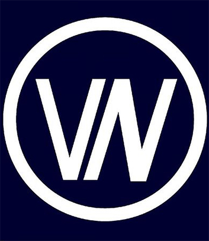

Apresentação
NO NORTE DO PAÍS, A 15
MINUTOS DO PORTO, SITUA-
SE A COUDELARIA VILA NOVA.

Fundada em 2011, a partir de um grupo de éguas selecionadas e homogéneas e de um conjunto de garanhões com mérito reconhecido, a CVN procura criar cavalos funcionais e finos, vocacionados para o ensino, sem nunca perder o temperamento e a nobreza associada ao cavalo lusitano.
Para além da criação, a CVN tem como objetivo formar cavaleiros e amantes de cavalos em geral, oferecendo as melhores condições possíveis para a prática de equitação.